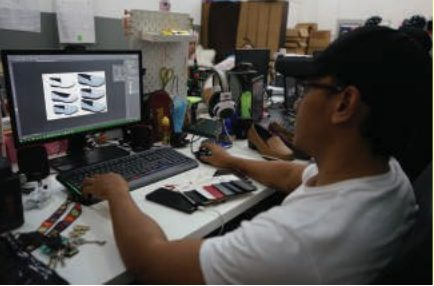
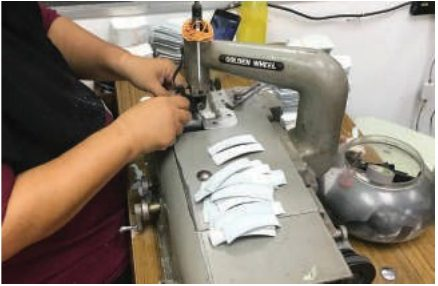
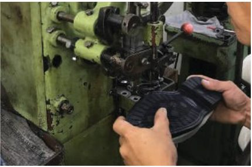
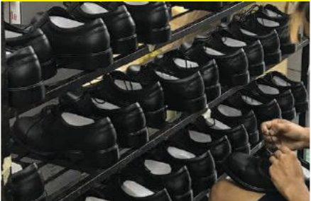
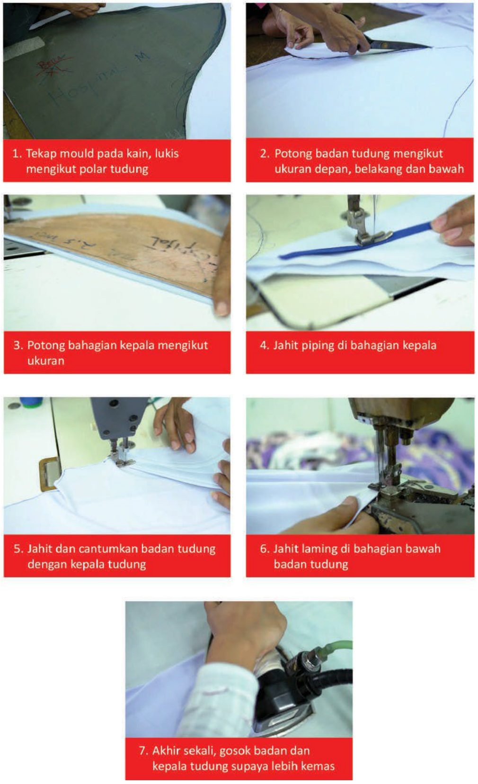
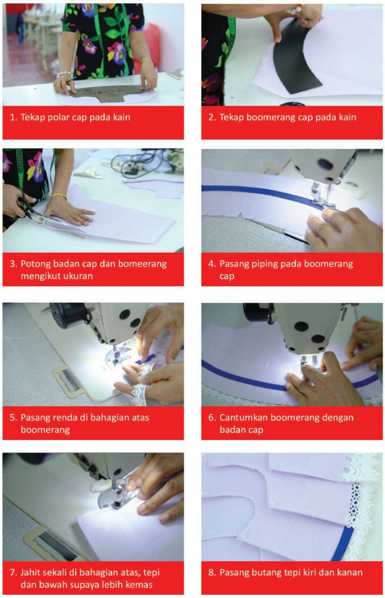
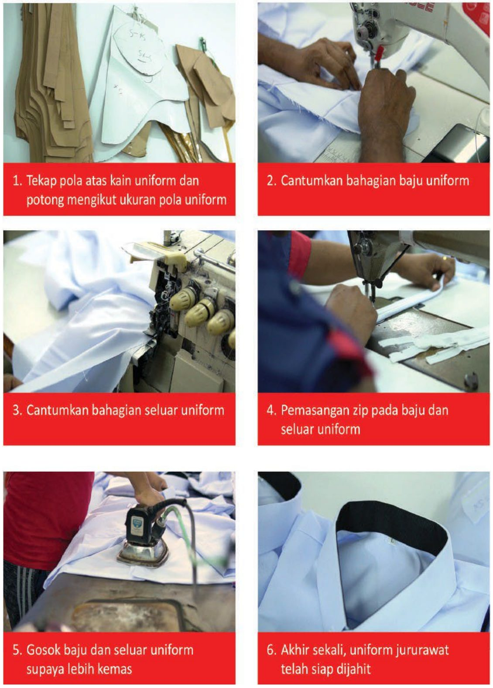

Medsooth™ Health Shoes
Step Into Relief. Medical health footwear with a layered cushioning system that supports your feet through every shift.
What's inside a Medsooth™ shoe
Roomy toe box
A wider front gives your toes room to move.
Microfiber upper
Soft, durable microfiber that wipes clean with a damp cloth.
Suede microfiber lining
Soft cushioned lining that absorbs moisture, resists fungus and moulds to your foot.
Coolmax® mesh
Top insole layer that wicks away moisture and odour.
Poron® insole
Shock-absorbing, anti-bacterial and anti-fungal performance cushioning, backed with soft EVA.
Orthotic arch system
High-arch EVA support that follows the natural curve of your foot.
Cushion midsole & soft footbed
Extra softness that also stabilises the insole.
Natural rubber outsole
100% natural rubber — slip-resistant, light and stabilising as you walk.


Who Medsooth™ is for
Medsooth™ for Ministry of Health staff


How Medsooth™ shoes are made




We also make



Find your Medsooth™ fit
Ask us about sizes, bulk orders for your department, or individual pairs.